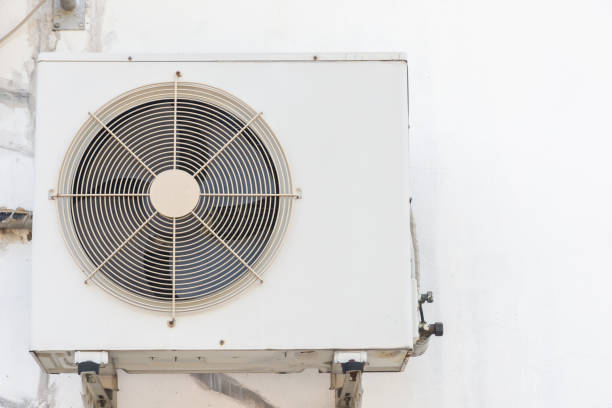

Sabinal TX Ductless Mini Split Installation | Military Community HVAC Services

Sabinal, Texas represents a dynamic military community in Medina County where ductless mini split systems provide essential climate control solutions for military families, government employees, and civilian residents who benefit from proximity to Joint Base Andrews and the San Antonio metropolitan area. This strategically located community combines military precision with suburban convenience, creating distinctive HVAC opportunities that require specialized expertise in both military housing requirements and civilian residential applications.
Our comprehensive ductless mini split installation, repair, and maintenance services serve Sabinal residents and businesses with deep understanding of military community needs, from deployment flexibility to security considerations, and the specific requirements of properties that support both active duty personnel and civilian families in this important military corridor.
Joint Base Andrews Military Community
Sabinal' proximity to Joint Base Andrews creates a unique military-focused community where precision, reliability, and security are fundamental values that extend to residential HVAC expectations. Military families and defense personnel require systems that deliver consistent performance, energy efficiency, and advanced technology that meets the exacting standards expected by service members and their families.
Military Family Housing Excellence
Active duty and retired military families in Sabinal understand the importance of reliable, efficient systems that minimize maintenance requirements while providing superior performance. Ductless systems align perfectly with military values by offering dependable operation, energy efficiency that reduces utility costs for military families, and advanced technology that provides precise control and monitoring capabilities.
Our installation approach for military families emphasizes durability, efficiency, and low-maintenance operation that supports the demanding schedules and high standards expected by service members. We also provide flexible scheduling that accommodates deployment schedules, TDY assignments, and the unique requirements of military family life.
Security and Operational Discretion
The concentration of military personnel and security-sensitive facilities near Sabinal creates demand for HVAC service providers who understand and respect security protocols. Our installation and service practices include appropriate discretion, professional conduct, and flexibility that accommodates the unique security requirements of military families and installations.
Government Employee Community
Sabinal' location attracts numerous federal employees, government contractors, and civil service personnel who work throughout the San Antonio metropolitan area. This professional community requires reliable HVAC systems that support demanding work schedules while providing energy efficiency that manages household expenses for government families.
Federal Employee Housing Solutions
Government employees and contractors require HVAC systems that provide reliable comfort while managing energy costs effectively on government salaries. Ductless systems support federal employee lifestyles by offering programmable controls for varying work schedules, energy efficiency that reduces utility expenses, and reliable operation that ensures home comfort during demanding government work schedules.

Installation approaches for government employee homes include flexible scheduling that accommodates federal work hours, energy-efficient systems that support budget management, and reliable performance that ensures comfortable home environments for families who serve in demanding government positions.
Security Clearance Professional Support
Many Sabinal residents hold security clearances and work in sensitive government positions that require discretion and professional service delivery. Our service approach includes understanding of the professional environment and security awareness that supports the unique requirements of cleared personnel and their families.
Civilian Residential Community Integration
Sabinal' civilian residential community benefits from the stability and security provided by military presence while maintaining the character of a suburban family community. These residential properties require HVAC solutions that provide family comfort, energy efficiency, and reliable performance that supports successful suburban living.
Family Neighborhood Climate Control
Civilian families in Sabinal often include federal employees, contractors, and private sector professionals who require reliable home climate control that supports family life and professional responsibilities. Ductless systems provide ideal solutions for these families by offering zone control, energy efficiency, and quiet operation that enhances family comfort.
Multi-Generational Housing Applications
Many Sabinal families include multiple generations or extended family members who may have different comfort preferences and health considerations. Ductless systems excel in these applications by offering individual zone control that allows different areas to be maintained at optimal conditions for family members of all ages.

Transportation and Commuter Hub
Sabinal' excellent transportation access, including proximity to major highways and public transportation, makes it popular with commuters who work throughout the San Antonio metropolitan area. This commuter lifestyle creates specific HVAC requirements including energy efficiency for cost management and reliable performance for busy professional schedules.
Commuter Lifestyle Support
Professional commuters require HVAC systems that provide reliable comfort while managing energy costs effectively during varying occupancy patterns. Ductless systems support commuter lifestyles by offering programmable controls, energy efficiency, and reliable operation that ensures home comfort regardless of commuting schedules and daily routines.
Home Office and Remote Work Solutions
The growing trend toward remote work and home offices in Sabinal creates demand for precise climate control in dedicated work spaces and converted areas that serve as professional environments. Ductless systems provide ideal solutions for home offices by offering zone control that maintains optimal comfort in work areas while managing energy consumption throughout the home.
Healthcare and Medical Services
Sabinal' healthcare facilities, including medical offices serving military families and civilian residents, require precise climate control that maintains patient comfort while supporting medical equipment operation and maintaining professional environments essential for quality healthcare delivery.
Military Family Medical Services
Medical facilities serving military families require reliable climate control that maintains patient comfort while supporting specialized medical equipment and maintaining sterile conditions. Ductless systems provide the precision and reliability needed for medical applications while offering quiet operation that enhances patient comfort.
Veteran Healthcare Applications
Healthcare facilities serving veterans and military retirees require climate control that accommodates the specific needs of older patients while maintaining optimal conditions for medical equipment and staff productivity. Ductless systems offer the reliability and precision needed for successful veteran healthcare delivery.
Educational and Child Development Services
Sabinal' educational facilities and childcare services, supporting military and civilian families, require reliable climate control that provides optimal learning environments while managing operational costs within educational budgets. These facilities benefit from the efficiency and reliability of ductless technology.
Military Child Development Centers
Childcare facilities serving military families require climate control that maintains optimal conditions for children while supporting staff productivity and managing operational costs. Ductless systems excel in childcare applications by offering zone control, quiet operation, and energy efficiency that supports successful child development programming.
Educational Support Services
Tutoring centers, educational support services, and after-school programs require climate control that provides optimal learning environments while managing costs within program budgets. Ductless systems provide the efficiency and reliability needed for successful educational support operations.
Commercial and Retail Services
Sabinal' commercial sector serves military families, government employees, and civilian residents with retail stores, restaurants, and service businesses that require reliable climate control for customer comfort and business success in competitive metropolitan markets.
Military Family Retail Services
Retail establishments serving military families require climate control that provides customer comfort while managing operational costs effectively. Ductless systems excel in retail applications by offering zone control, energy efficiency, and reliable operation that supports successful business operations serving the military community.
Restaurant and Food Service Excellence
Restaurants and food service establishments require specialized climate control that manages kitchen heat loads while maintaining comfortable dining environments for customers. Ductless systems provide ideal solutions for restaurant applications by offering powerful cooling for kitchen areas while providing precise control for dining rooms.
Professional Services and Business Support
Sabinal' professional service sector includes businesses serving government employees, military families, and contractors, requiring climate control that provides client comfort while supporting professional atmospheres and business productivity in competitive markets.
Government Contractor Services
Businesses serving government contractors and federal employees require reliable climate control that maintains professional environments while managing operational costs within business budgets. Ductless systems provide the reliability and efficiency needed for successful professional service delivery to government clients.
Military Support Services
Businesses providing services to military families require climate control that maintains professional environments while accommodating the unique scheduling needs of military clients. Ductless systems offer the flexibility and performance needed for successful military support business operations.
Fitness and Recreation Facilities
Sabinal' fitness centers, recreational facilities, and wellness services require climate control that manages heat loads from exercise equipment while maintaining comfortable conditions for customers during active workouts. These facilities benefit from the capacity and efficiency of ductless technology.
Military Fitness and Wellness
Fitness facilities serving military personnel require robust climate control that can handle intense physical training while maintaining optimal conditions for equipment and participant safety. Ductless systems provide the capacity and reliability needed for demanding military fitness applications.
Family Recreation Centers
Community recreation centers and family fitness facilities require climate control that adapts to varying activity levels and occupancy patterns while providing energy efficiency that supports community programming budgets. Ductless systems offer the adaptability needed for successful recreational facility operations.
Automotive and Transportation Services
Sabinal' automotive sector serves military families and commuters with dealerships, repair shops, and transportation services that require specialized climate control for customer comfort, employee productivity, and equipment protection in demanding automotive environments.
Military Vehicle Services
Automotive facilities serving military personnel require climate control that maintains comfortable environments for customers while protecting sensitive automotive equipment and electronics. Ductless systems provide reliable operation in demanding automotive service environments while offering energy efficiency that supports business profitability.
Commuter Transportation Support
Transportation services supporting San Antonio area commuters require reliable climate control that maintains customer comfort during vehicle transactions and service appointments. Ductless systems offer the performance and efficiency needed for successful transportation service operations.
Energy Efficiency and Cost Management
Sabinal families and businesses benefit from energy efficiency and cost management that align perfectly with ductless technology advantages. High-efficiency systems provide significant utility cost savings while offering superior performance that supports both military family budgets and business profitability.
Military Family Budget Support
Military families often operate on structured budgets that benefit from energy-efficient HVAC systems that reduce utility costs while providing reliable comfort. Ductless systems provide exceptional efficiency that helps military families manage household expenses while maintaining optimal home comfort for family life.
CPS Energy Energy Programs
Potomac Electric Power Company (CPS Energy) serves Sabinal with various energy efficiency programs that can help military families and civilians offset the cost of high-efficiency ductless systems. We assist customers with rebate applications and ensure installations meet program requirements to maximize available incentives.
Smart Technology and Military Integration
Modern ductless systems integrate smart technology that provides particular benefits for military families including remote monitoring capabilities during deployments, energy usage optimization for budget management, and integration with security systems that enhance family safety and home protection.
Deployment Monitoring Capabilities
Smart ductless systems allow military families to monitor and control home climate systems remotely during deployments, TDY assignments, and extended training periods, providing valuable peace of mind and home protection capabilities that support military family life and deployment readiness.
Integration with Military Housing Standards
Advanced ductless systems can be configured to meet military housing standards and energy efficiency requirements while providing modern convenience features that enhance military family quality of life and support successful military careers and family stability.
Security and Emergency Preparedness
Military communities require robust emergency preparedness and security considerations that extend to HVAC systems and service delivery. Our 24/7 emergency service includes security awareness and emergency response capabilities that support military family safety and community preparedness requirements.
Military Community Emergency Response
Emergency HVAC service for military families includes understanding of security protocols and base access requirements while providing rapid response when climate control emergencies threaten family safety and comfort. We maintain appropriate security clearance awareness and professional conduct standards.
Disaster Preparedness Integration
Military families often maintain higher levels of emergency preparedness that can be enhanced with smart HVAC systems that include backup power integration, emergency monitoring capabilities, and system resilience features that support family emergency preparedness plans and community security requirements.
Indoor Air Quality and Military Family Health
Sabinal military families benefit from advanced air filtration and indoor air quality management integrated with ductless systems. These features support family health while providing excellent climate control performance that enhances comfort and well-being for military families and civilian residents.
Military Family Health Support
Advanced air cleaning technologies integrated with ductless systems provide particular benefits for military families by removing allergens, pollutants, and contaminants while maintaining optimal indoor air quality that supports respiratory health and overall family wellness throughout the home environment.
Chemical Sensitivity Considerations
Military personnel may experience chemical sensitivities from occupational exposures that benefit from advanced air filtration and environmental control. Ductless systems with sophisticated air cleaning capabilities help maintain optimal indoor environments that support military personnel health and family comfort.
Seasonal Climate and Military Operations
Sabinal' Mid-Atlantic climate with distinct seasons requires HVAC systems that provide reliable performance during all weather conditions while supporting military operations and family life. Ductless systems excel in adapting to seasonal changes while maintaining consistent performance.
Year-Round Mission Support
Military operations continue regardless of weather conditions, requiring reliable home climate control that ensures family comfort during all seasons while supporting military personnel who must maintain operational readiness throughout the year. Ductless systems provide the reliability needed for military family support.
Extreme Weather Preparedness
Military families often maintain heightened weather preparedness that benefits from robust HVAC systems designed to operate reliably during extreme weather events while providing backup capabilities that support emergency preparedness and family safety during severe weather conditions.
Community Development and Military Support
Sabinal' ongoing development includes infrastructure improvements and new construction that support both military families and civilian residents. We contribute to community development by providing reliable HVAC solutions that enhance property values and support successful military community operations.
Military Housing Development
New housing developments and military family housing projects benefit from modern HVAC solutions that provide efficient operation, reliable performance, and advanced technology that supports successful military family life while meeting energy efficiency standards and military housing requirements.
Property Investment and Military Community Value
Sabinal properties represent solid investments that benefit from professional HVAC systems to protect value and ensure reliable operation. Ductless systems provide excellent investment protection by offering efficient operation, advanced technology, and reliable performance that enhances property appeal for both military and civilian families.
Military Community Real Estate
Professional HVAC systems enhance property values in Sabinal' military-influenced real estate market by providing modern efficiency, advanced technology, and reliable performance that appeals to discriminating military families while supporting successful property ownership and long-term value appreciation in this important military community.
Contact us today at (888) 918-9104 to schedule your consultation and discover how specialized ductless mini split systems can enhance comfort, efficiency, and reliability in your Sabinal property. Our experienced team understands the unique requirements of military communities and government employee families, and we're ready to provide expert guidance for all your heating and cooling needs in dedicated Sabinal, Texas.
Get Your Sabinal TX Quote
Specialized ductless mini split services for military families and government employees throughout Sabinal and Medina County.
Schedule Your Sabinal Service
Call (888) 918-9104 for military-community ductless mini split services in Sabinal, TX.